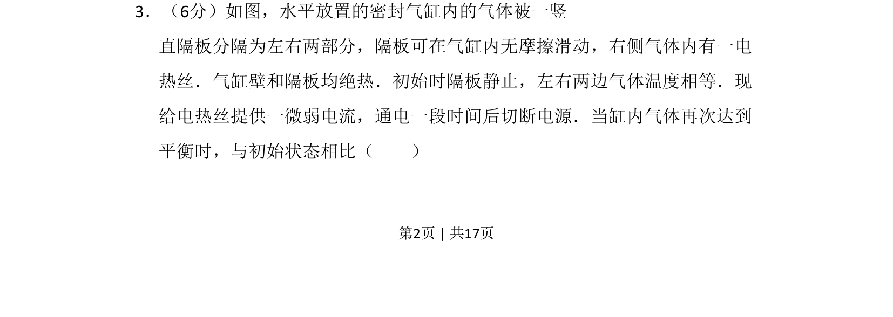
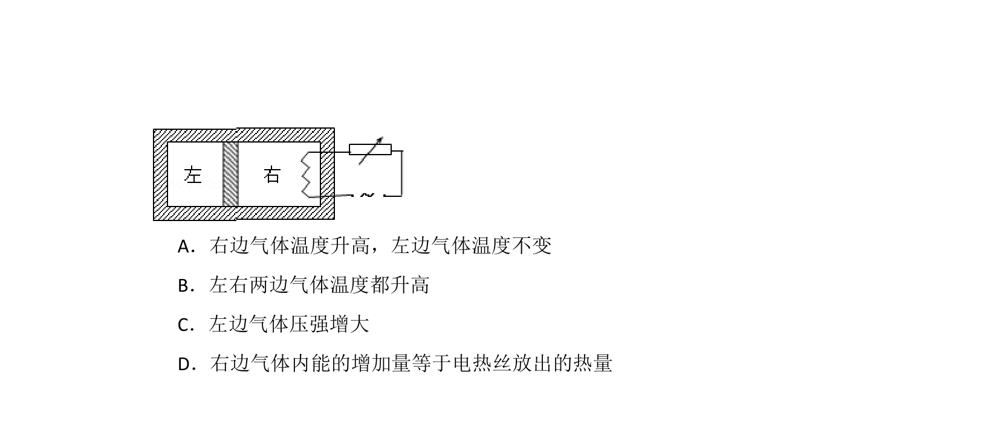
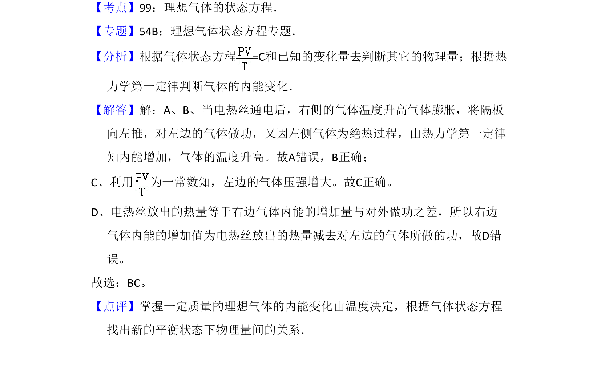

考点：热力学第一定律 理想气体状态方程 压强 体积


该题考查绝热气缸中气体加热后重新平衡时状态参量的变化，涉及热力学第一定律和理想气体状态方程。

📄 原 PDF 第 2 页：
素材/真题/吉林/2008-2024·（吉林）物理高考真题/2009年高考物理试卷（全国卷Ⅱ）（解析卷）.pdf
3．（6分）如图，水平放置的密封气缸内的气体被一竖 直隔板分隔为左右两部分，隔板可在气缸内无摩擦滑动，右侧气体内有一电 热丝．气缸壁和隔板均绝热．初始时隔板静止，左右两边气体温度相等．现 给电热丝提供一微弱电流，通电一段时间后切断电源．当缸内气体再次达到 平衡时，与初始状态相比（ ）